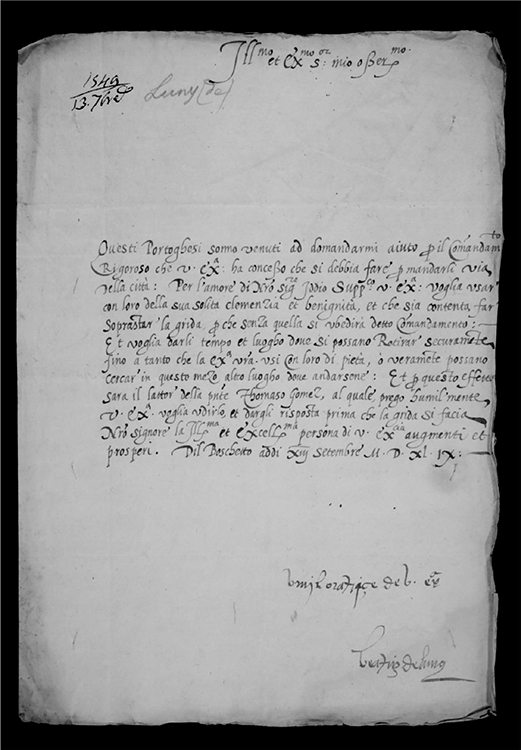
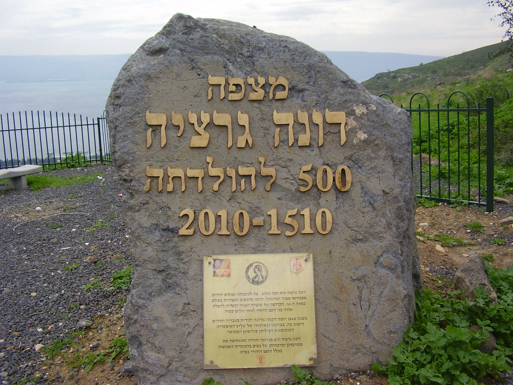
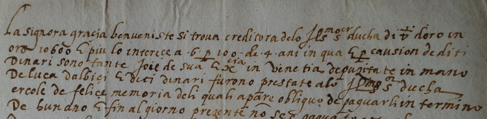

| Identificativo | Titolo | Autore | Destinatario | Tipologia | Data | Luogo | Collocazione | Traduttore / Contributore | Versione digitale | Editore | Copertura | Diritti | Descrizione | Immagine |
|---|---|---|---|---|---|---|---|---|---|---|---|---|---|---|
| item1 | Lettera di Gracia Nasi al duca Ercole II d'Este | Gracia Nasi VIAF | Ercole II d'Este VIAF | Lettera manoscritta | 13/09/1549 | Ferrara GeoNames | ASMo, ASE, Cancelleria, Carteggio di Particolari, b. 749, fasc. «Luny» | Raffaella Pelizzari (contributore) | MUSE | Università di Bologna | Bologna GeoNames | Open access | Lettera scritta da Doña Gracia al duca Ercole II d'Este che illustra come la comunità dei conversos cercò attivamente il suo aiuto quando venne decretata la loro espulsione da Ferrara per la peste. |  |
| item2 | Biblia de Ferrara |
Johan Radermacher
VIAF Gracia Nasi VIAF Yom Tob Athias VIAF Abraham Usque VIAF |
— | Frontespizio di libro a stampa | 1553 | Ferrara GeoNames | National Library of Portugal |
Abraham Usque (traduttore)
VIAF Raffaella Pelizzari (contributore) |
Europeana | Università di Bologna | Bologna GeoNames | Public domain | La Biblia en lengua española stampata a Ferrara tra il 1551 e il 1553. Il frontespizio presenta l'immagine di una nave alla deriva, figura che rispecchia l'odissea degli esuli. |  |
| item3 | Donna in rosso con bambino (Gracia Nasi?) | Agnolo Bronzino VIAF | — | Dipinto ad olio | 1540 circa | — | National Gallery of Art, Washington DC | Raffaella Pelizzari (contributore) | Wikipedia | Università di Bologna | Bologna GeoNames | Public domain | La donna ritratta nel dipinto molto probabilmente non è Gracia Nasi ma per molto tempo si è ritenuto che questo fosse l'unica immagine esistente della Senora. |  |
| item4 | Francobollo commemorativo Gracia Nasi | Stato di Israele | — | Francobollo | 1991 | Israele GeoNames | — | Raffaella Pelizzari (contributore) | link | Università di Bologna | Bologna GeoNames | Public domain | Francobollo commemorativo emesso dallo stato di Israele nel 1991. |  |
| item5 | Medaglia Gracia Nasi «La Chica» | Pastorino di Giovan Michele de' Pastorini VIAF | — | Medaglia | 1558 | Ferrara GeoNames | Jewish Museum of New York | Raffaella Pelizzari (contributore) | Wikipedia | Università di Bologna | Bologna GeoNames | Public domain | Medaglia raffigurativa di Gracia Nasi «La Chica», il più antico esempio conosciuto con soggetto ebraico e iscrizione in ebraico. |  |
| item6 | Pietra commemorativa per i 500 anni di Gracia Nasi | n.d. | — | — | 2011 | Tiberiade GeoNames | Museo Dona Gracia, Tiberiade | Raffaella Pelizzari (contributore) | Wikipedia | Università di Bologna | Bologna GeoNames | Creative Commons | Pietra e targa commemorative per i 500 anni di Gracia Nasi davanti al museo a lei dedicato a Tiberiade (Israele). |  |
| item7 | Traduzione della lettera del Gran Visir Rustem Pascià a Ercole II d'Este | Gran Visir Rustem Pascià VIAF | Ercole II d'Este VIAF | Lettera manoscritta | 1558 | Costantinopoli GeoNames | ASMo, ASE, Cancelleria, Carteggio Principi Esteri, b. 1612, fasc. Turchia |
Ibrahim Bey (traduttore) Raffaella Pelizzari (contributore) |
link | Università di Bologna | Bologna GeoNames | Archivio di Stato di Modena | Traduzione ufficiale in italiano della lettera del Gran Visir Rustem Pascià, redatta presso la cancelleria di Costantinopoli da Ibrahim Bey. |  |
| item8 | Documento di credito Gracia Benveniste | Cancelleria estense | — | Documento notarile: lettera di credito | N.d. | Ferrara GeoNames | ASMo, ASE, Cancelleria, Carteggi di Particolari, b. 131, fasc. Benvenisti | Raffaella Pelizzari (contributore) | link | Università di Bologna | Bologna GeoNames | Archivio di Stato di Modena | Memoria che certifica che Beatrice «La Chica» (in ebraico Gracia Benvenisti) era creditrice del Duca per la somma di 10.600 scudi d'oro. |  |
| item9 | Lettera di Brianda al duca Ercole II d'Este | Brianda de Luna VIAF | Ercole II d'Este VIAF | Lettera manoscritta | 1547 | Venezia GeoNames | ASMo, ASE, Carteggio di Particolari, b. 747 | Raffaella Pelizzari (contributore) | link | Università di Bologna | Bologna GeoNames | Archivio di Stato di Modena | Lettera di Brianda de Luna al duca Ercole II d'Este nella quale richiede la sua mediazione nel contenzioso con la sorella, nell'imminenza della partenza da Venezia per Ferrara. |  |
| item10 | Frontespizio Consolaçam ás tribulaçoens de Israel | Samuel Usque VIAF | — | Riproduzione del frontespizio originale | 1553 | Ferrara GeoNames | Non più esistente | Raffaella Pelizzari (contributore) | Wikipedia | Università di Bologna | Bologna GeoNames | Public domain | Riproduzione del frontespizio della prima edizione del testo, andata perduta. Gracia Nasi, a cui l'opera è dedicata, è definita la sesta via per la consolazione di Israele. |  |